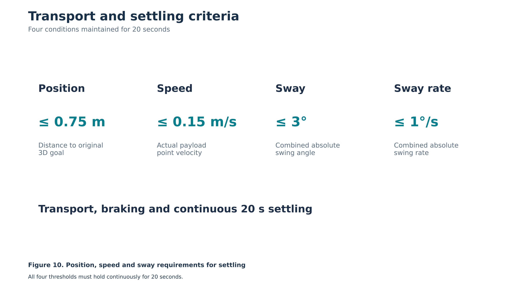

Active anti-sway crane control塔吊主动抑摆控制
Coordinated transport, braking, and stable arrival
协调吊运、制动与稳定到位
This work studies learning-based control of tower-crane lifting under wind: moving the load quickly while limiting sway, overshoot and residual motion, and lifting end to end around obstacles in a Unity crane environment.
该研究关注风扰下塔吊吊装的学习型控制：在快速运输的同时抑制摆动、到位超调与残余运动，并在 Unity 塔吊环境中实现绕障的端到端吊装。
Overview研究概览
A heavy payload travels through wind. The controller must deliver it quickly, suppress sway in transit, and arrive without overshoot or residual motion. The study builds on a learned controller, adds physically informed calibration and training from moving states, and compares it with model-based controllers on the same tasks — all in simulation.
重型吊物在风中运输：控制器既要把吊物快速送到安装点，又要抑制运输中的摆动、到位后不超调、不残留晃动。研究在学习型控制器的基础上，引入物理校准与运动状态起点训练，并在相同任务上与基于模型的控制方法对比——目前均在仿真中开展。
Control motion throughout transport控制整个运输过程中的运动
Investigate coordinated crane actuation that responds to payload dynamics while moving toward the installation target.
研究能够响应吊载动力学的塔吊协调控制，在向安装目标运输的同时处理载荷运动。
Brake without leaving residual motion制动时减少残余运动
Study active braking and arrival behaviour to limit continued forward motion, rebound, and swing after the load reaches the target region.
研究主动制动与到位行为，减少吊载进入目标区域后继续前冲、回摆和摆动。
Examine robustness and retained capability检验鲁棒性与能力保持
Use controlled simulation studies to examine wind disturbances, variations in task geometry, and whether additional training preserves previously learned lifting ability.
通过受控仿真研究风扰动、任务几何变化，以及后续训练能否保留已有吊运能力。
How it is evaluated评价方式
- Swing magnitude during transport: mean, RMS, and peak运输过程中的摆动：均值、均方根与峰值
- Arrival overshoot and residual payload motion到位超调与吊载残余运动
- Transport duration and sustained stable holding运输耗时与持续稳定保持
- Disturbance robustness and retained task success抗扰能力与已有任务成功能力的保持
“Delivered” is not “settled”“运到”不等于“停稳”
A lift counts as delivered only when position, speed, sway angle and sway rate all stay within their thresholds for 20 s after reaching the target. A stricter centimetre-level holding test is scored separately, so that transport capability and local precision are not mixed up.
只有到达目标后，位置、速度、摆角、摆速四项同时满足阈值并连续保持 20 秒，才算真正送到位。更严格的厘米级守点测试单独评价，避免把运输能力和局部精度混为一谈。

One lift, six cameras同一次吊运，六个机位
Recorded directly from Unity cameras: the learned controller performs one transport task with a 20 t payload in 6 m/s constant wind. Blue is the payload, green the target with its 0.75 m tolerance circle, orange the start.
由 Unity 相机直接录制：学习型控制器在 6 m/s 恒风下完成一次 20 t 吊物的运输任务。蓝色为吊物，绿色为目标及 0.75 m 容差圈，橙色为起点。
Lifting around obstacles, end to end端到端绕障吊装
A PPO policy (stage 4, 300M decisions) controls the crane directly in native Unity, lifting the load up and around walls to the target. The viewer below replays the recorded 50 Hz states of all 25 development tasks — plan view, 3D replay, swing over time and per-task swing statistics. Pick a task inside the viewer.
PPO 策略（第 4 阶段，3 亿次决策）在原生 Unity 中直接控制塔吊，把吊物抬升并绕过墙体送到目标。下方查看器回放全部 25 个开发任务的 50 Hz 状态记录：俯视图、3D 回放、摆角随时间变化以及逐任务的摆角统计，可在查看器内切换任务。
Status and related work研究进展与相关工作
This work is ongoing. Quantitative results — calibration, comparisons with model-based control and training from moving starts — will be added here once they are written up.该研究仍在进行中。定量结果（物理校准、与模型控制方法的对比、运动起点训练等）将在整理成文后补充到本页。